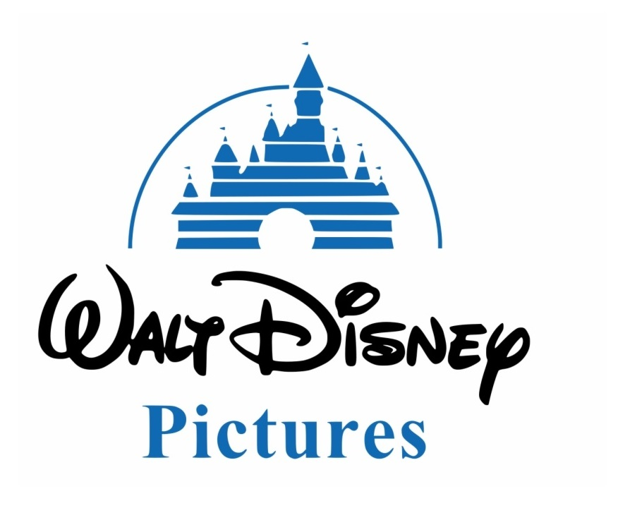
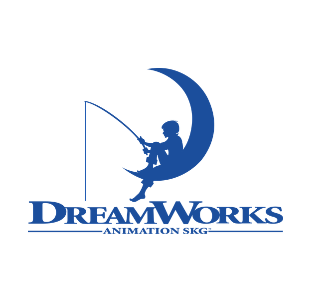
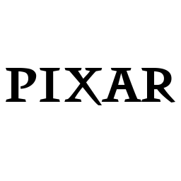
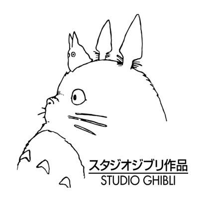

Navega por PelisKids para conocer las mejores opciones de filmes infantiles. ¡Con reseñas incluídas! Escoge la mejor opción para una tarde de películas en familia.
Echa un vistazo a las siguientes categorías.
¿Ya tienes listas las palomitas?




Studio Disney
The Walt Disney Studios es un estudio de cine estadounidense, es una de las cuatro divisiones comerciales de The Walt Disney Company. El estudio, es uno de los más importantes del mundo ya que es considerado el número uno de los "Cinco Grandes" y es mejor conocido por sus divisiones cinematográficas multifacéticas, tiene su sede en el estudio homónimo de The Walt Disney Studios en Burbank, California. Fundado en 1923, es el cuarto más antiguo entre los principales estudios.
Busca tu película:
Studio Dreamworks
DreamWorks es un estudio de cine que produce y distribuye películas, así como videojuegos y programas de televisión, fundado el 12 de octubre de 1994, poco tiempo después de que Jeffrey Katzenberg renunciara a The Walt Disney Company. En 2016 DreamWorks fue comprada por Comcast,la compañía de telecomunicaciones dueña de NBC Universal. Esta compra fue lo suficiente para mejorar el estudio. Hoy está entre las 8 grandes de Hollywood.
Busca tu película:
Studio Pixar
Pixar Animation Studios (Pixar) es un estudio cinematográfico de animación por computadora subsidario de Walt Disney Studios y propiedad de The Walt Disney Company con sede en Emeryville, Estados Unidos.3 Su origen se remonta a 1979, cuando comenzó a operar como The Graphics Group, la división computacional de Lucasfilm. Su filmografía, producida con su propio software RenderMan, incluye algunas de las películas animadas más exitosas y elogiadas de todos los tiempos. Asimismo el equipo de Pixar ha recibido varios premios por sus logros técnicos en el cine de animación.
Busca tu película:
Studio Ghibli
Studio Ghibli es un estudio japonés de animación, considerado por la crítica especializada y muchos cinéfilos como uno de los mejores estudios de animación del mundo en la actualidad. Fundado en 1985, está dirigido por el galardonado director Hayao Miyazaki junto a su amigo y mentor, Isao Takahata. Sus orígenes datan de 1983, con la película Nausicäa del Valle del Viento, la cual comenzó como un manga en una publicación de la revista Tokuma Shoten.